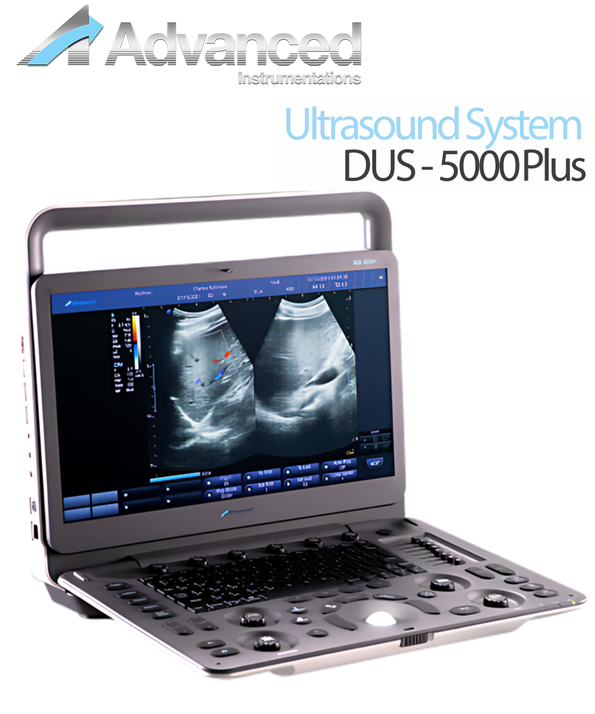

Advanced Instrumentations
Sistema de Ultrasonido DUS-5000 Plus
Tecnologías poderosas para ser tu asistente portátil de confianza. El Sistema de Imagenología de Diagnóstico por Ultrasonido Digital Avanzado® DUS-500 Plus es un impresionante sistema de ultrasonido compacto, que ofrece un valor excepcional y la mejor calidad en toda la gama de aplicaciones, con soporte mejorado para PW/CW, imágenes de flujo Doppler en color, imágenes Doppler de potencia e imágenes Doppler de onda pulsada para cumplir con los requisitos de diagnóstico más exigentes.